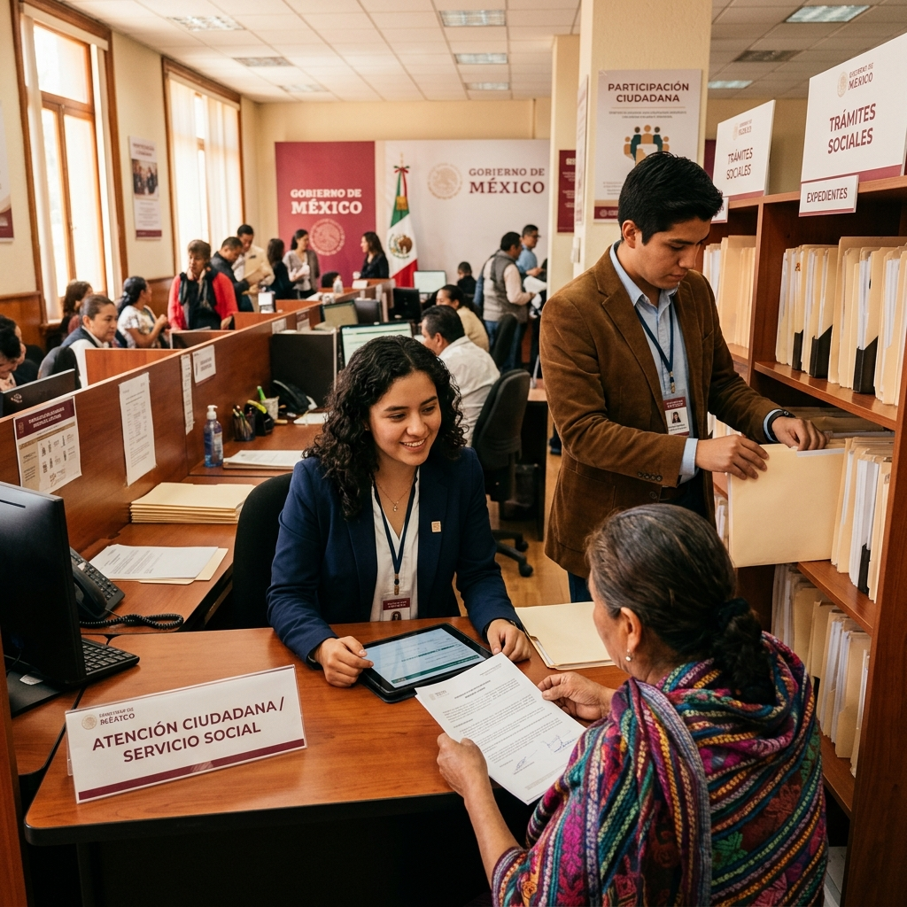
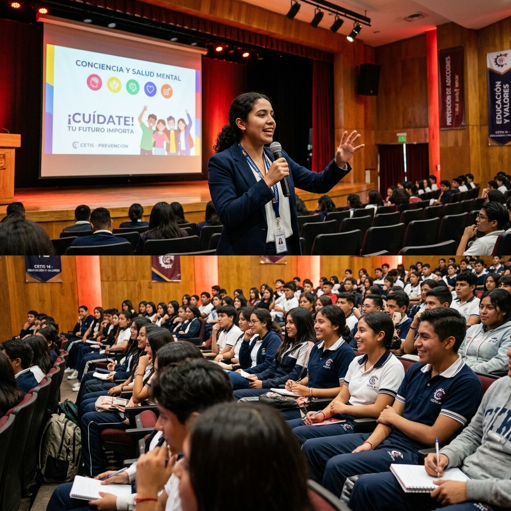

Conoce la misión, visión y objetivo que guían cada una de nuestras acciones en favor de la juventud gomezpalatina.
Los pilares que definen nuestro compromiso con las juventudes de Gómez Palacio.
Ser un puente estratégico entre las juventudes, el gobierno municipal y los diversos sectores de la sociedad, fomentando entornos seguros, resilientes y participativos que respondan a las necesidades, intereses y aspiraciones de las personas jóvenes, especialmente de aquellas en situación de vulnerabilidad, marginación o exclusión, a través de un enfoque territorial, interinstitucional e intergeneracional.
Consolidarse como un referente de gobernanza participativa, innovación social y atención integral a las juventudes, posicionando a las y los jóvenes gomezpalatinos como protagonistas del desarrollo local, capaces de liderar procesos de cambio, generar soluciones creativas y fortalecer la cohesión comunitaria, en un Gómez Palacio más justo, equitativo, seguro y próspero.
Garantizar que las juventudes de Gómez Palacio ejerzan plenamente sus derechos, accedan a oportunidades de calidad y contribuyan activamente al fortalecimiento del tejido social y al desarrollo integral del municipio, mediante la implementación de acciones estratégicas que reduzcan las brechas de desigualdad y fortalezcan sus capacidades en diversos ámbitos de la vida.
El Instituto Municipal de la Juventud (IMJ) de Gómez Palacio te ofrece una gran oportunidad. Acude a sus oficinas y ellos te canalizan a dependencias del Ayuntamiento u otras instituciones para que cumplas con este requisito escolar de manera práctica, ganando experiencia real y apoyando el desarrollo del municipio. ¡Es una excelente forma de combinar tus estudios con un aporte a la comunidad!
Contáctanos
Sesiones educativas y dinámicas dirigidas especialmente a alumnos de secundarias, preparatorias y universidades del municipio de Gómez Palacio, Durango. Estas pláticas buscan informar, sensibilizar y empoderar a la juventud frente a temas clave de su etapa de vida.

Enfocadas principalmente en jóvenes conductores. Su objetivo principal es promover la responsabilidad al volante durante reuniones sociales, fiestas o salidas nocturnas donde se consume alcohol. El mensaje central es simple y directo: si vas a beber, elige a alguien del grupo que no tome para que sea el "conductor designado" y así todos regresen a casa de forma segura.
Una iniciativa diseñada especialmente para apoyar a los jóvenes del municipio. Una tarjeta de descuentos y beneficios exclusiva para personas de 17 a 29 años que residan en Gómez Palacio. Con ella, los jóvenes gomezpalatinos pueden acceder a promociones y rebajas en una variedad de negocios y servicios locales. Si cumples los requisitos (edad, residencia y documentos como INE o CURP), puedes tramitarla a través del IMJ.
Descuento del 50% en boleto de ida con viaje de ida y vuelta en Estrella Blanca (Chihuahuenses) para jóvenes del municipio de Gómez Palacio. Una promoción especial dirigida a jóvenes residentes a través del Instituto Municipal de la Juventud.
Gracias a un convenio entre el IMJ y la Facultad de Lenguas de la Universidad Juárez del Estado de Durango (UJED), se ofrece un descuento del 50% en los módulos de idiomas. Aprende o mejora inglés (hasta 12 niveles), francés o italiano con profesores calificados, en horarios flexibles (matutinos, vespertinos o sabatinos).